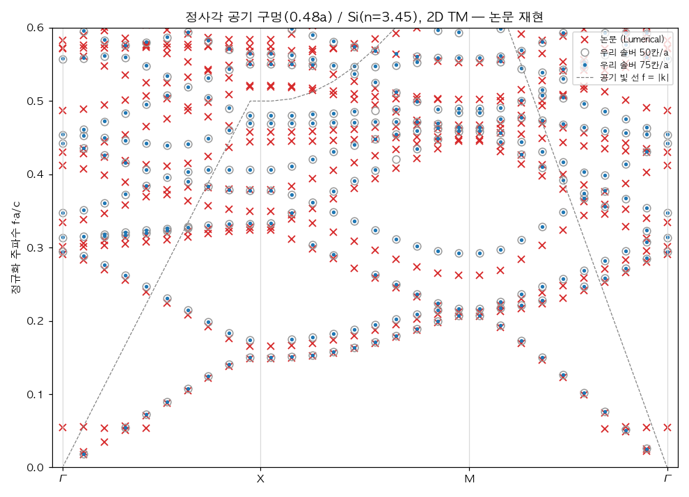
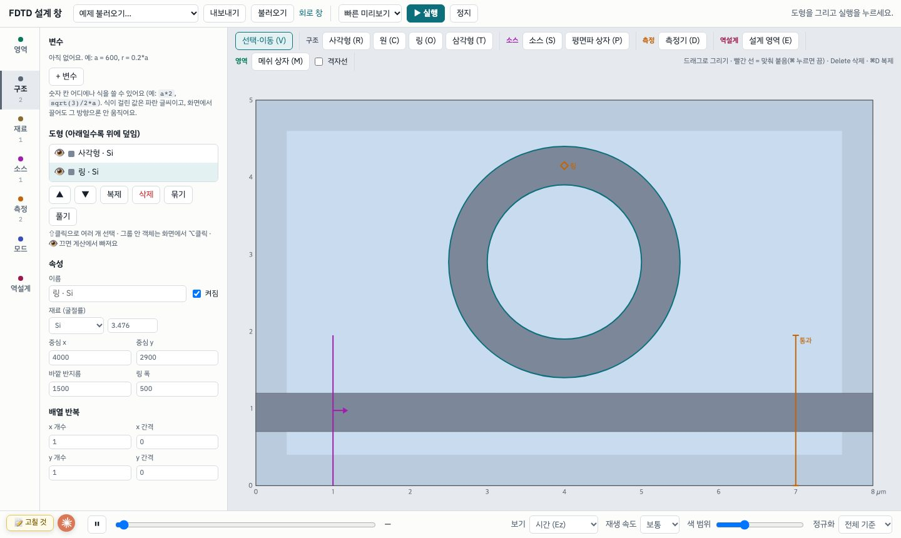
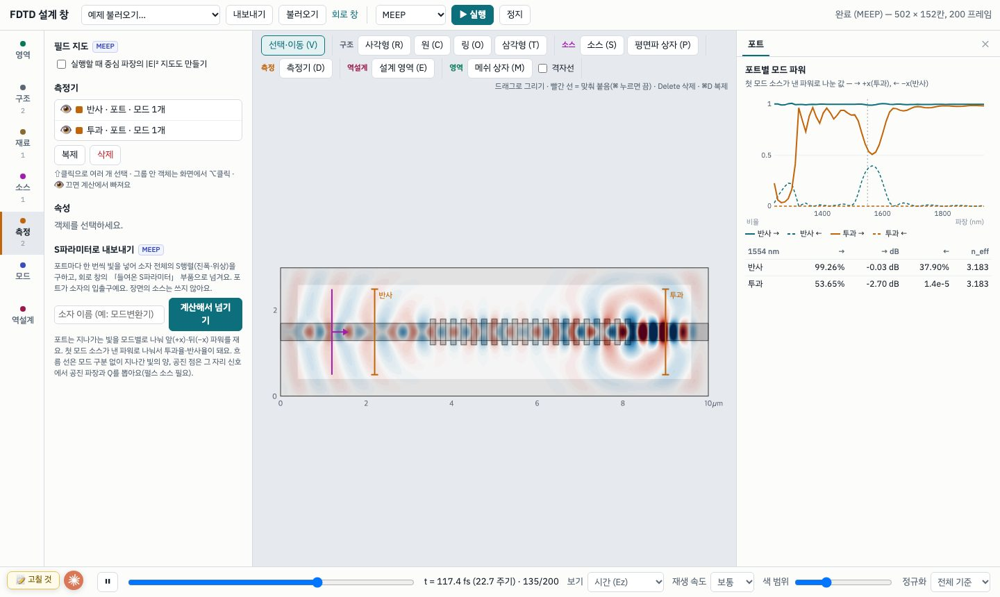
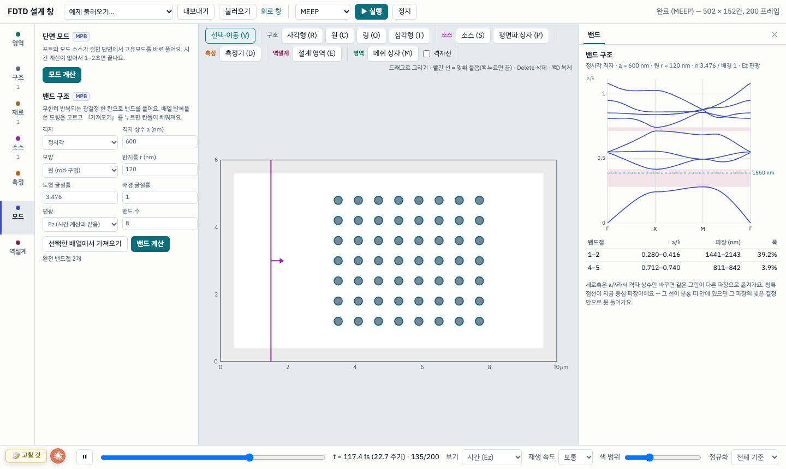
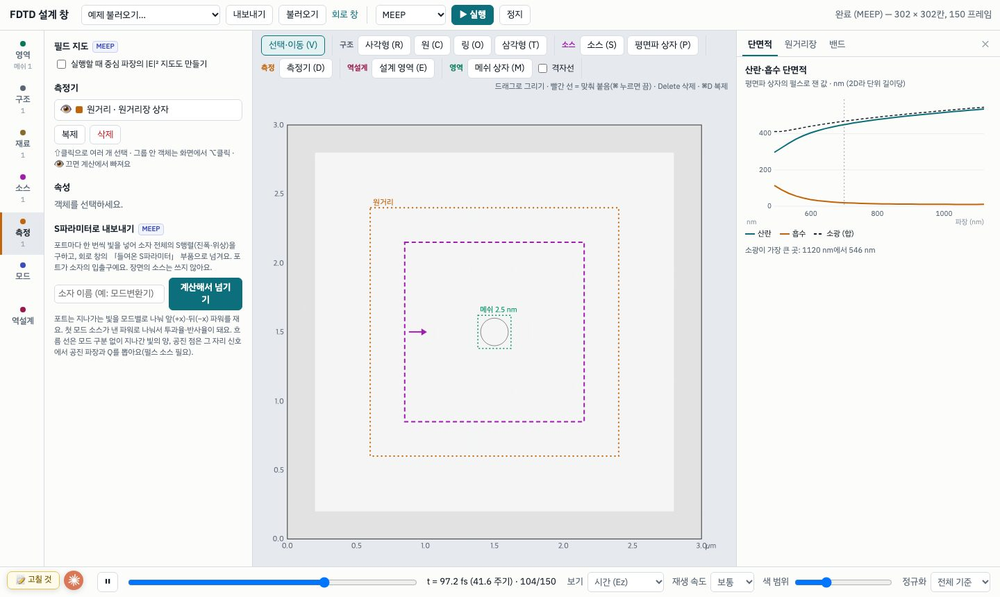
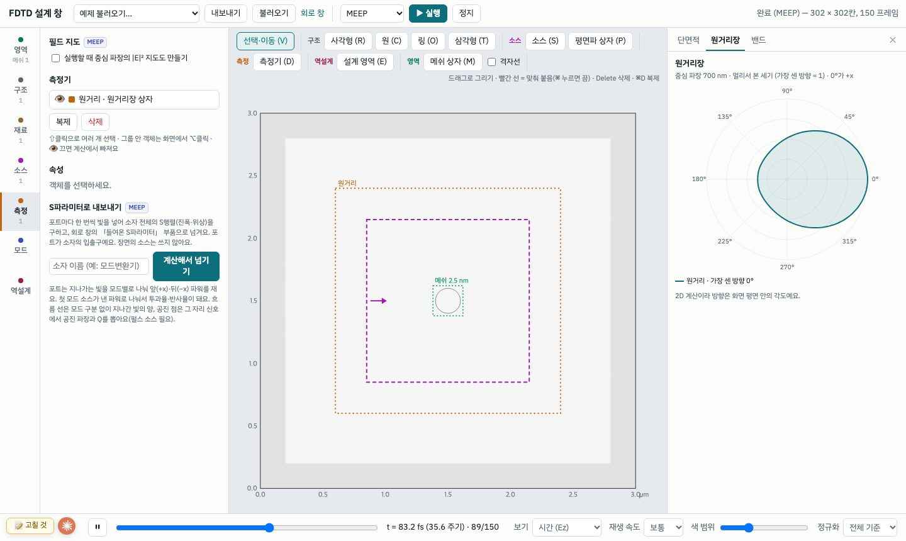
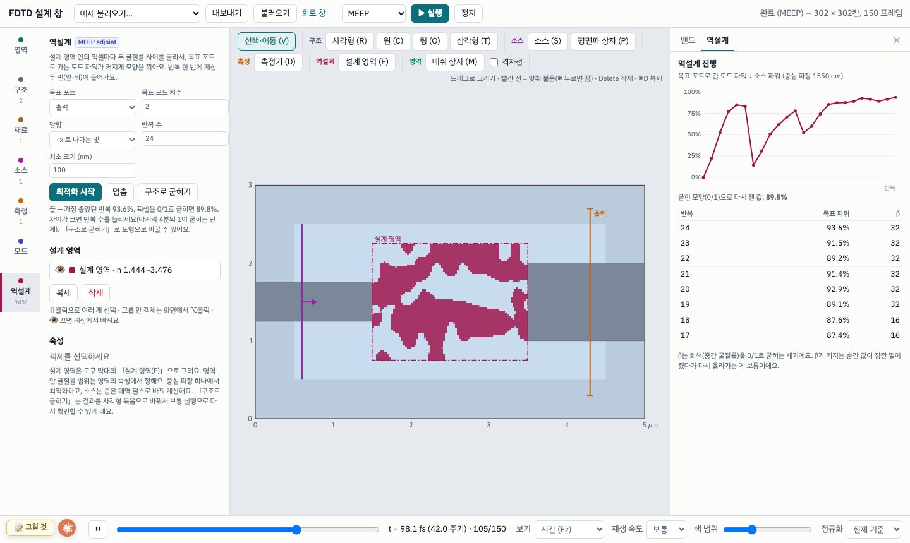

대학을 졸업하면서 학교 라이선스로 쓰던 광학 시뮬레이터를 더는 쓸 수 없게 되었습니다. 논문을 읽다가 「이 구조에 빛을 넣으면 실제로 저렇게 될까」를 확인해 보고 싶을 때마다 손이 비었습니다. 이 글은 그 빈자리를 채우려고 FDTD 시뮬레이터의 설계 창을 직접 만든 과정입니다. 다음 글에서는 같은 방식으로 만든 광회로 시뮬레이터를 다룹니다.
시작 — 직접 짜 보다가 오픈소스를 찾다
FDTD(유한차분 시간영역법)는 공간을 작은 칸으로 나누고, 맥스웰 방정식을 시간 순서대로 한 칸씩 풀어 빛이 퍼지는 모습을 그대로 계산하는 방법입니다. 처음에는 시뮬레이션 같은 계산에 강하다고 들은 Rust로 직접 짜 보았습니다. 전기장과 자기장을 반 칸씩 엇갈려 놓는 Yee 격자, 가장자리에서 빛을 반사 없이 삼키는 흡수층, 도파로 모드를 골라 넣는 소스를 차례로 만들었습니다.
만든 다음 가장 먼저 해 본 것은 졸업논문 때 학교의 상용 시뮬레이터로 계산했던 광결정을 그대로 넣어 보는 것이었습니다. 실리콘 판에 한 변 240 nm 정사각 구멍을 500 nm 간격으로 뚫은 구조입니다. 밴드 구조를 다시 풀어 예전 결과와 겹쳐 보니 비슷하게 나왔습니다.

그런데 그다음부터는 만들어야 할 것이 끝없이 늘어났습니다. 금속처럼 파장마다 굴절률이 바뀌는 재료, 도형 경계를 칸 단위로 끊지 않고 평균 내는 처리, 결과에서 투과율이나 공진의 Q값을 뽑는 분석까지 필요했습니다. 그래서 찾아보니, 이런 기능을 갖춘 도구가 이미 오픈소스로 많이 있었습니다.
- MEEP (MIT): 오픈소스 FDTD. 재료 라이브러리, 모드 분해, 공진 분석, 원거리장, 역설계까지 대부분이 이미 들어 있습니다. 2D 계산은 노트북에서도 몇 초~몇십 초면 끝납니다.
- MPB (MIT): 시간 계산 없이 고유모드를 바로 푸는 계산기. 도파로의 유효굴절률이나 광결정의 밴드 구조를 구할 때 씁니다.
- gdsfactory · KLayout: 광칩 도면을 코드와 화면으로 그리는 도구. 계산기와 이어 쓰는 흐름이 잘 정리되어 있습니다.
다만 MEEP은 파이썬 스크립트로 구조를 적는 방식이라, 도형을 그려 보면서 바로 고치는 「설계 창」이 없었습니다. 그래서 역할을 나눴습니다. 계산은 MEEP에 맡기고, 그리면서 설계하는 창을 만듭니다. 처음 짰던 Rust 엔진은 버리지 않고, 결과를 빨리 훑어보는 미리보기 엔진으로 남겼습니다.
설계 창의 구성
화면 왼쪽 세로 막대에 기능을 일곱 구획으로 나눴습니다. 구획마다 색이 있고, 캔버스 위 객체도 같은 색으로 그려져서 「이 선이 무엇인지」가 색으로 이어집니다.

| 구획 | 하는 일 |
|---|---|
| 영역 | 계산 영역 크기, 격자, 파장, 흡수층 두께, 거울 대칭(계산 절반), 주기 경계 |
| 구조 | 사각형·원·링·삼각형 그리기, 배열 반복, 변수와 식(a = 600, r = 0.2*a처럼) |
| 재료 | 기본 재료와 MEEP 재료 라이브러리(Ag, Al, cSi, LiNbO₃, GaAs 등 22개) |
| 소스 | 도파로 모드(방향·차수), 평면파, 점, 가우시안 빔, 평면파 상자(산란 계산) |
| 측정 | 포트(모드별 투과·반사), 흐름 선, 공진 점(Q), 원거리장, 중심 파장의 |E|² 지도 |
| 모드 | 단면 모드(유효굴절률·군굴절률), 광결정 밴드 구조 |
| 역설계 | 목표 포트로 가는 빛이 커지도록 영역 안의 모양을 자동으로 깎기 |
무엇을 볼 수 있나
브래그 격자는 도파로 옆에 작은 돌기를 일정한 간격으로 붙인 구조입니다. 간격이 맞는 파장의 빛은 돌기마다 조금씩 반사되고, 그 반사가 같은 위상으로 쌓여 되돌아갑니다. 입력과 출력 쪽에 포트를 두고 펄스를 한 번 쏘면 파장마다의 투과율과 반사율이 함께 나옵니다.

광결정은 굴절률이 다른 물질을 주기적으로 늘어놓은 구조입니다. 주기가 파장과 비슷하면 어느 방향으로도 빛이 들어가지 못하는 파장 대역(밴드갭)이 생깁니다. 배열로 그린 rod 하나를 고르면 격자 상수와 반지름을 읽어 와서 MPB로 밴드를 풉니다.

금 나노선처럼 작은 입자에 평면파를 비추면, 입자가 빛을 얼마나 흩뜨리고 얼마나 삼키는지(산란·흡수 단면적), 그리고 흩어진 빛이 어느 방향으로 가는지(원거리장)를 함께 봅니다.


역설계 — 모양을 컴퓨터가 깎는다
보통은 사람이 모양을 정하고 성능을 계산하지만, 역설계는 반대로 「이 포트로 빛이 가장 많이 가게」라는 목표만 주고 모양을 찾게 합니다. 설계 영역을 수천 개의 픽셀로 나누고, 픽셀마다 실리콘과 산화막 사이의 값을 고릅니다. 픽셀 수천 개를 하나씩 바꿔 보는 대신, adjoint 방법을 쓰면 계산 두 번(앞으로 한 번, 거꾸로 한 번)으로 모든 픽셀에 대한 기울기가 한꺼번에 나옵니다.

다만 이 숫자를 그대로 믿으면 안 됩니다. 최적화 중에는 픽셀이 실리콘과 산화막의 중간값을 가질 수 있는데, 실제로 만들 수 있는 것은 둘 중 하나뿐입니다. 픽셀을 0과 1로 굳히면 89.8%가 되고, 이걸 다시 사각형 도형으로 옮겨 처음부터 계산하면 80.0%가 나왔습니다. 마지막 10%p는 매끄럽게 보간된 경계가 25 nm 계단으로 바뀌면서 생긴 차이로 보입니다. 이 손실을 줄이는 것이 남은 숙제입니다.
계산을 어떻게 믿을까
여기서 가장 어려운 질문이 남습니다. 학교에서는 상용 시뮬레이터와 결과를 맞대 볼 수 있었지만, 이제는 그 정답지가 없습니다. 화면에 그럴듯한 그림이 나와도, 그게 맞는 그림인지는 따로 확인해야 합니다.
지금까지 가장 믿을 만한 기준은 결과를 이미 아는 구조였습니다. 위의 졸업논문 광결정이 첫 번째 기준이었고, 예전 결과와 비슷하게 나온 덕분에 적어도 밴드 구조를 푸는 부분은 크게 틀리지 않았다고 볼 수 있었습니다. 위쪽 밴드에서 어긋나는 부분은 아직 원인을 끝까지 따라가 보지 못했습니다.
그래서 앞으로는 같은 방식을 넓혀 가려고 합니다. 논문에 나온 구조를 치수 그대로 그려서, 논문의 그래프와 같은 결과가 나오는지 비교하는 것입니다. 맞으면 그 기능은 믿을 수 있는 목록에 올리고, 어긋나면 어디서 갈라지는지 따라가 고칩니다. 지도에서 읽은 논문들이 그대로 시험 문제가 되는 셈이라, 이 과정을 다음 글들에 하나씩 남길 생각입니다.
다음 글
FDTD는 소자 하나를 정밀하게 보는 도구라 수 마이크로미터가 한계입니다. 칩 위의 회로 전체는 수 밀리미터라 같은 방식으로는 계산할 수 없어서, 소자마다 「들어온 빛이 어디로 얼마나 나가는지」(S행렬)만 남기고 그것들을 이어 회로를 푸는 다른 종류의 시뮬레이터가 필요합니다. 다음 글은 그 광회로 시뮬레이터와, 이 설계 창에서 만든 소자를 회로의 부품으로 넘기는 방법입니다.
도구
- MEEP — A. F. Oskooi et al., “MEEP: A flexible free-software package for electromagnetic simulations by the FDTD method,” Computer Physics Communications 181, 687 (2010). meep.readthedocs.io
- MPB — S. G. Johnson and J. D. Joannopoulos, “Block-iterative frequency-domain methods for Maxwell's equations in a planewave basis,” Optics Express 8, 173 (2001).
- 금 재료 모형 — A. D. Rakić et al., Applied Optics 37, 5271 (1998) (MEEP 재료 라이브러리).
- gdsfactory · KLayout — gdsfactory.github.io · klayout.de